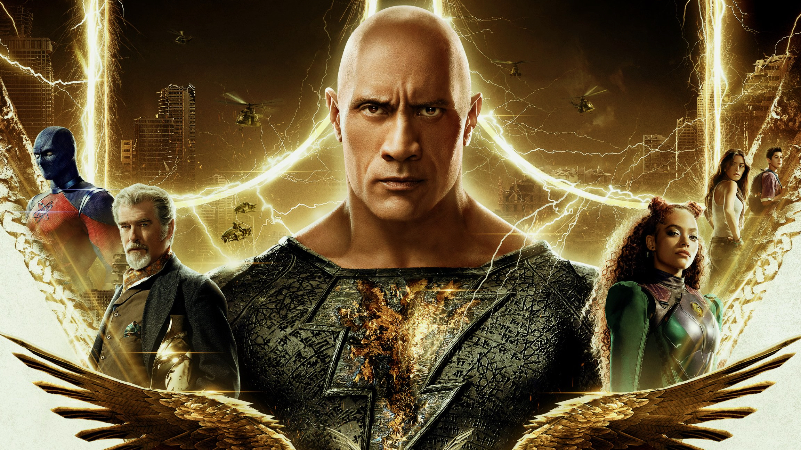

BLACK ADAM
Jan 23, 2023 | Posted by Craig Stark
An entity with the power of the Gods is freed
from his prison and begins a campaign
to exact his revenge
in Jaume Collet-Serra’s Black Adam.
This is a film that has reportedly been in the works for around 15 years. It’s a passion
project for Dwayne Johnson who has managed to use his star clout to convince Warner Bros.
to invest in this so here we have Black Adam. The character started out as a
Captain Marvel -or Shazam!- villain but Dwayne Johnson’s involvement demands he be
the lead so the concept turns into an anti-hero story of sorts with Johnson playing the title
character becoming a hero on his own terms.

Dwayne Johnson is undoubtedly a massive star with whatever he appears in gaining
attention by virtue of his involvement. He is an actor with proven range as evidenced by
some of his earlier roles but in recent years he has been leaning on his star power and
turning in performances that are largely interchangeable. That combined with his physical
presence and very active public persona makes it difficult to see any of his roles as actual
characters as he fails to disappear into them. This is, of course, nothing new. Actors like
Arnold Schwarzenegger, Sylvester Stallone, Jean Claude Van Damme etc made careers
out of being the tough action man at the centre of a film and audiences would be drawn to
what they were guaranteed to bring to the table. Johnson is almost the modern equivalent,
though this film does signify a departure from his typical cinema persona.
Oddly, Johnson departing from his standard persona is one of the things that lets this film
down. Teth Adam -as he is known early on- is not an emotive character which means that
Johnson doesn’t get to make use of his charisma. There is an emotional story behind Teth
Adam that the film delivers but Johnson’s performance is so deliberately one-note that it
doesn’t land in the way that it needs to. It does suit the character as a relentless
vengeance-driven engine of destruction but there’s an emotional disconnect between what
the audience is told about the character and how he expresses how he feels about it that
makes it difficult to connect with.
Teth Adam is the least interesting character the film has to offer. His backstory is
something the film takes a lot of time to flesh out and the script plays with how time and
perspective alter historic events in mildly interesting ways but without a strong emotional
connection to the eventual clarification, it falls flat. The rest of the time Teth Adam is an
unstoppable force with no equal who becomes a folk hero because a lot of his rage is
turned on those oppressing a Middle Eastern country. The film aggressively repeats Teth
Adam being challenged, declaring how powerful he is and then proving how powerful he
is. It very quickly becomes frustrating seeing him engage in countless fights he has
absolutely no chance of losing. A couple of weaknesses are established but never made
proper use of.